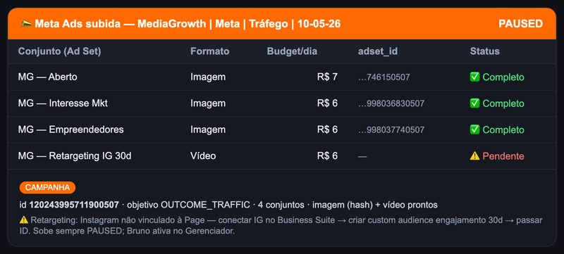

1 · O que a Jessica faz nessa skill
A Jessica é a Gestora de Tráfego do time. Aqui o trabalho é criar uma campanha do zero no Meta Ads e deixá-la pronta na conta — porém desligada (PAUSED), esperando seu OK final. O modelo é simples: a IA monta, o humano aprova e ativa.
O que ela CONSEGUE fazer:
- 🎯 Cria a campanha de leads (e outros objetivos: tráfego, vendas, alcance, engajamento) direto na API do Meta — Facebook + Instagram.
- 🧱 Monta a estrutura completa em 4 chamadas: campanha → conjunto de anúncios → criativo → anúncio, todos PAUSADOS.
- 📝 Guarda um rascunho (draft) editável em disco — você vai ajustando campo a campo (orçamento, idade, headline, CTA…) antes de subir.
- 🖼️ Baixa o criativo que você anexar no WhatsApp ou mandar por link do Google Drive (imagem ou vídeo) e usa na campanha.
- 🛡️ Roda checagens anti-ban antes de subir (teto de 3 campanhas/dia, nome duplicado, conta fria, horário de robô, orçamento alto) e te avisa ou bloqueia.
- 📂 Documenta tudo depois de subir: briefing, IDs do Meta, links do Gerenciador e a mídia, numa pasta datada do cliente.
O que ela NÃO faz:
- 🚫 Nunca ATIVA a campanha. Sobe PAUSADA — quem liga (PAUSED → ACTIVE) é você, no Gerenciador de Anúncios.
- 🚫 Não monta carrossel. Se você mandar várias imagens, ela pergunta como usar (1 anúncio por arquivo ou variações no mesmo conjunto) — não junta sozinha num carrossel.
- 🚫 Não otimiza campanha que já está no ar (isso é a skill de Análise de Campanhas) nem sobe Google Ads (skill própria).
- 🚫 Não inventa dado nem publica criativo gerado por IA sem revisão — a mídia sempre vem de você.
2 · Tudo que você pode pedir (variáveis)
Você manda um comando compacto com barras | separando os blocos (ordem livre). O que faltar, ela pergunta uma coisa por vez. Estas são as variáveis que montam a campanha:
https://mediagrowth.com.br" ou "orçamento R$30/dia", é isso que entra — mesmo que o CLIENTE.md ou a última campanha digam outra coisa. Os registros só completam o que você não mencionou. Por isso: diga no chat o que importa e ela respeita à risca.3 · Como funciona + como tirar o melhor dela
Por dentro, ela segue um fluxo fixo (você só acompanha o resultado, não precisa pedir os passos):
- Confirma o objetivo primeiro (bloqueante) — sem saber se é Leads/Tráfego/Vendas/etc, ela não monta nada nem baixa mídia.
- Identifica o cliente e baixa o criativo que você anexou ou mandou por link do Drive.
- Monta o rascunho (
draft.json) com os campos do seu comando + os defaults pro que faltou, e te mostra um preview compacto. - Roda as checagens anti-ban (preflight) — se tiver bloqueio (teto de campanhas, nome repetido, conta suspensa) ela para e te explica; se for só aviso, mostra com 🟡.
- Espera seu "ok / sobe" — sem aprovação explícita, ela fica só no preview e não chama a API.
- Sobe tudo PAUSADO, documenta a campanha numa pasta datada e te devolve o link do Gerenciador pra você conferir e ativar.
Como tirar o MÁXIMO dela:
- Diga sempre o objetivo logo de cara ("leads", "tráfego") — é o que destrava o resto; sem ele ela para e pergunta.
- Mande tudo o que vale no chat — o input atual vence memória e cadastro. Se a URL/orçamento/público mudou, fale; ela usa exatamente o que você disse e marca a divergência com ⚠️.
- Mande o criativo junto (anexo no WhatsApp ou link do Drive). Se vier mais de um arquivo, responda como usar (1 anúncio cada ou variações).
- Use o draft a seu favor: ajuste campo a campo com
@jessica draft | <ajuste>em vez de refazer o comando inteiro. - Confira os avisos 🟡 antes de aprovar — conta fria, orçamento alto ou horário de madrugada são sinais pra escalar com calma.
4 · Quais respostas esperar
Antes de subir, você recebe um preview do rascunho com cliente, objetivo, orçamento, público, criativo e destino. Quando aprovar, ela cria a campanha e devolve a confirmação:
- ✅ Campanha PAUSED criada no Meta — com o link do Gerenciador pra você conferir o preview (mobile + desktop), validar o público e ativar.
- 📂 Pasta datada do cliente com
briefing.md,estrutura.json,ids-meta.json(campaign/adset/creative/ad) elinks.md. - ⚠️ Divergências marcadas — se você passou algo diferente do cadastro, ela mostra no preview, sem corrigir escondido nem perguntar de novo.
- 🟡 Avisos anti-ban listados quando houver (conta fria, orçamento alto, horário de máquina) — você decide se sobe assim mesmo.
- 🔧 Status do tracking — Pixel e Instagram aparecem como ✅ ou ⚠️/— pra você saber se algo precisa de ajuste antes de ativar.
Confirmo o objetivo (Leads), baixo a arte e monto o rascunho. Te mostro o preview:
Bisa · Leads · R$ 50/dia · 25-65 BR · form 222111000 · CTA Apply Now
Criativo: arte-consig.png ✅ · Pixel ✅ · IG —
🟡 Aviso: subindo 19h, dentro do horário comercial, ok.
Confirma que pode subir?
→ depois do seu "ok":
✅ Campanha PAUSED no Meta — Bisa · Leads · R$ 50/dia
📂 pasta datada do cliente com os IDs e links
🔗 Gerenciador: <link>
👉 Confere e ativa lá quando estiver pronto.
📸 Exemplo real do resultado
Resultado real da campanha Meta subida via API para a MediaGrowth (PAUSED): 4 conjuntos com adset_id, budget e status.
